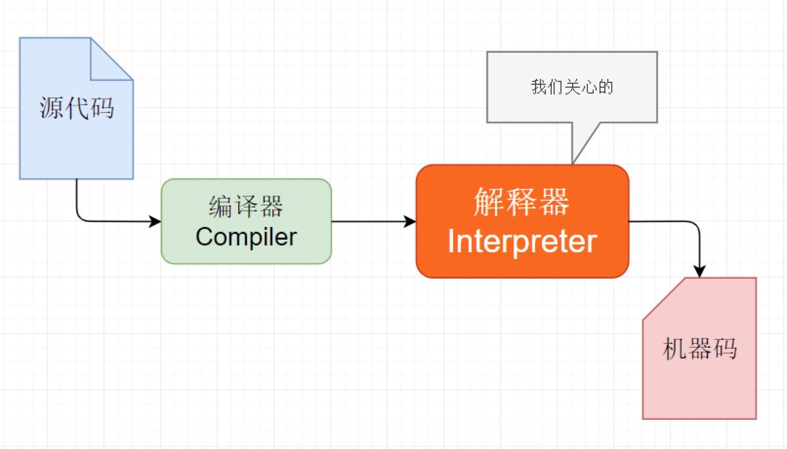
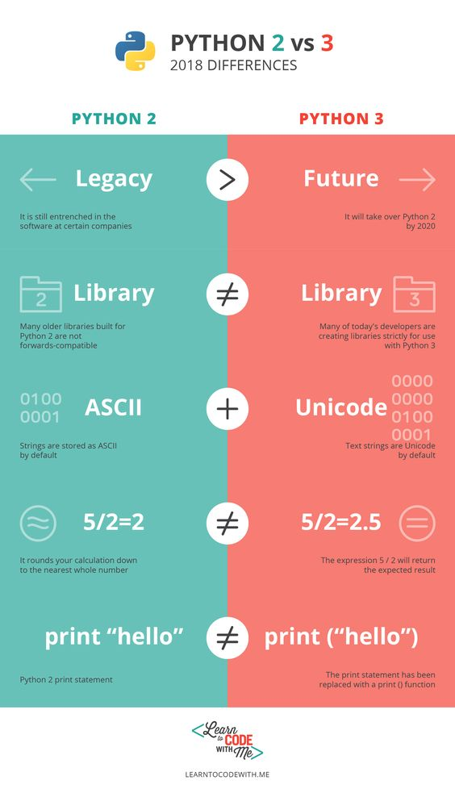

[toc]
认识 Python
人生苦短，我用 Python —— Life is short, you need Python

目标
- Python 的起源
- 为什么要用 Python？
- Python 的特点
- Python 的优缺点
Python 2.x与3.x版本简介- 执行
Python程序的三种方式- 解释器 ——
python/python3 - 交互式 ——
ipython - 我选择免费易扩展的VSCode,因为还得写别的语言，仅此而已
- 解释器 ——
01. Python 的起源
Python 的创始人为吉多·范罗苏姆（Guido van Rossum）
Python之父是荷兰人Guido van Rossum，被誉为历史上最伟大的12名程序员之一。

- 1989 年的圣诞节期间，吉多·范罗苏姆为了在阿姆斯特丹打发时间，决心开发一个新的解释程序，作为 ABC 语言的一种继承（感觉下什么叫牛人）
- ABC 是由吉多参加设计的一种教学语言，就吉多本人看来，ABC 这种语言非常优美和强大，是专门为非专业程序员设计的。但是 ABC 语言并没有成功，究其原因，吉多认为是非开放造成的。吉多决心在 Python 中避免这一错误，并获取了非常好的效果
- 之所以选中 Python（蟒蛇） 作为程序的名字，是因为他是 BBC 电视剧——蒙提·派森的飞行马戏团（Monty Python’s Flying Circus）的爱好者
- 1991 年，第一个 Python 解释器 诞生，它是用 C 语言实现的，并能够调用 C 语言的库文件
1.1 解释器（科普）
计算机不能直接理解任何除机器语言以外的语言，所以必须要把程序员所写的程序语言翻译成机器语言，计算机才能执行程序。将其他语言翻译成机器语言的工具，被称为编译器
编译器翻译的方式有两种：一个是编译，另外一个是解释。两种方式之间的区别在于翻译时间点的不同。当编译器以解释方式运行的时候，也称之为解释器

- 编译型语言：程序在执行之前需要一个专门的编译过程，把程序编译成为机器语言的文件，运行时不需要重新翻译，直接使用编译的结果就行了。程序执行效率高，依赖编译器，跨平台性差些。如 C、C++
- 解释型语言：解释型语言编写的程序不进行预先编译，以文本方式存储程序代码，会将代码一句一句直接运行。在发布程序时，看起来省了道编译工序，但是在运行程序的时候，必须先解释再运行

编译型语言和解释型语言对比
- 速度 —— 编译型语言比解释型语言执行速度快
- 跨平台性 —— 解释型语言比编译型语言跨平台性好
1.2 Python 的设计目标
1999 年，吉多·范罗苏姆向 DARPA 提交了一条名为 “Computer Programming for Everybody” 的资金申请，并在后来说明了他对 Python 的目标：
- 一门简单直观的语言并与主要竞争者一样强大
- 开源，以便任何人都可以为它做贡献
- 代码像纯英语那样容易理解
- 适用于短期开发的日常任务
这些想法中的基本都已经成为现实，Python 已经成为一门流行的编程语言
1.3 Python 的设计哲学

- 优雅
- 明确
- 简单
- Python 开发者的哲学是：用一种方法，最好是只有一种方法来做一件事
- 如果面临多种选择，Python 开发者一般会拒绝花俏的语法，而选择明确没有或者很少有歧义的语法
在 Python 社区，吉多被称为“仁慈的独裁者”
02. 为什么选择 Python？
- 代码量少
- ……
同一样问题，用不同的语言解决，代码量差距还是很多的，一般情况下
Python是Java的 1/5，所以说 人生苦短，我用 Python
03. Python 特点
- Python 是完全面向对象的语言
- 函数、模块、数字、字符串都是对象，在 Python 中一切皆对象
- 完全支持继承、重载、多重继承
- 支持重载运算符，也支持泛型设计
- Python 拥有一个强大的标准库，Python 语言的核心只包含 数字、字符串、列表、字典、文件 等常见类型和函数，而由 Python 标准库提供了 系统管理、网络通信、文本处理、数据库接口、图形系统、XML 处理 等额外的功能
- Python 社区提供了大量的第三方模块，使用方式与标准库类似。它们的功能覆盖 科学计算、人工智能、机器学习、Web 开发、数据库接口、图形系统 多个领域
面向对象的思维方式
- 面向对象 是一种 思维方式，也是一门 程序设计技术
- 要解决一个问题前，首先考虑 由谁 来做，怎么做事情是 谁 的职责，最后把事情做好就行！
- 对象 就是 谁
- 要解决复杂的问题，就可以找多个不同的对象，各司其职，共同实现，最终完成需求
04. Python 的优缺点
4.1 优点
- 简单、易学
- 免费、开源
- 面向对象
- 丰富的库
- 可扩展性
- 如果需要一段关键代码运行得更快或者希望某些算法不公开，可以把这部分程序用
C或C++编写，然后在Python程序中使用它们
- 如果需要一段关键代码运行得更快或者希望某些算法不公开，可以把这部分程序用
- ……
4.2 缺点
- 运行速度
- 国内市场较小
- 中文资料匮乏
01. Python 2.x 与 3.x 版本简介
目前市场上有两个 Python 的版本并存着，分别是 Python 2.x 和 Python 3.x

新的 Python 程序建议使用
Python 3.0版本的语法
- Python 2.x 是 过去的版本
- 解释器名称是 python
- Python 3.x 是 现在和未来 主流的版本
- 解释器名称是 python3
- 相对于
Python的早期版本，这是一个 较大的升级 - 为了不带入过多的累赘，
Python 3.0在设计的时候 没有考虑向下兼容- 许多早期
Python版本设计的程序都无法在Python 3.0上正常执行
- 许多早期
- Python 3.0 发布于 2008 年
- 到目前为止，Python 3.0 的稳定版本已经有很多年了
- Python 3.3 发布于 2012
- Python 3.4 发布于 2014
- Python 3.5 发布于 2015
- Python 3.6 发布于 2016
- 为了照顾现有的程序，官方提供了一个过渡版本 —— Python 2.6
- 基本使用了
Python 2.x的语法和库 - 同时考虑了向
Python 3.0的迁移，允许使用部分Python 3.0的语法与函数 - 2010 年中推出的
Python 2.7被确定为 最后一个Python 2.x 版本
- 基本使用了
提示：如果开发时，无法立即使用 Python 3.0（还有极少的第三方库不支持 3.0 的语法），建议
- 先使用
Python 3.0版本进行开发- 然后使用
Python 2.6、Python 2.7来执行，并且做一些兼容性的处理
03. 执行 Python 程序的三种方式
解释器 —— python / python3 |
3.1. 解释器 python / python3
Python 的解释器
# 使用 python 2.x 解释器 |
其他解释器
Python 的解释器 如今有多个语言的实现，包括：
CPython—— 官方版本的 C 语言实现Jython—— 可以运行在 Java 平台IronPython—— 可以运行在 .NET 和 Mono 平台PyPy—— Python 实现的，支持 JIT 即时编译
3.2. 交互式运行 Python 程序
- 直接在终端中运行解释器，而不输入要执行的文件名
- 在 Python 的
Shell中直接输入 Python 的代码，会立即看到程序执行结果
1) 交互式运行 Python 的优缺点
优点
- 适合于学习/验证 Python 语法或者局部代码
缺点
- 代码不能保存
- 不适合运行太大的程序
2) 退出 官方的解释器
1> 直接输入 exit()
exit() |
2> 使用热键退出
在 python 解释器中，按热键 ctrl + d 可以退出解释器
3> IPython
- IPython 中 的 “I” 代表 交互 interactive
特点
- IPython 是一个 python 的 交互式 shell，比默认的
python shell好用得多- 支持自动补全
- 自动缩进
- 支持
bash shell命令 - 内置了许多很有用的功能和函数
- IPython 是基于 BSD 开源的
版本
Python 2.x 使用的解释器是 ipython
Python 3.x 使用的解释器是 ipython3
要退出解释器可以有以下两种方式：
1> 直接输入 exit
In [1]: exit |
2> 使用热键退出
在 IPython 解释器中，按热键 ctrl + d，IPython 会询问是否退出解释器
### 3.3 不过我选择vscode, 一个编辑器走天下！
工具顺手就行，只是为了提升开发效率，对Python的基本认识应该就到此位置了